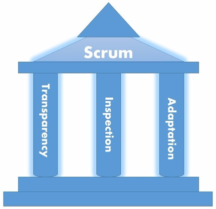
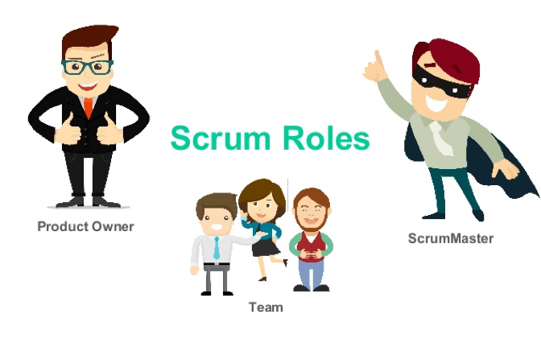
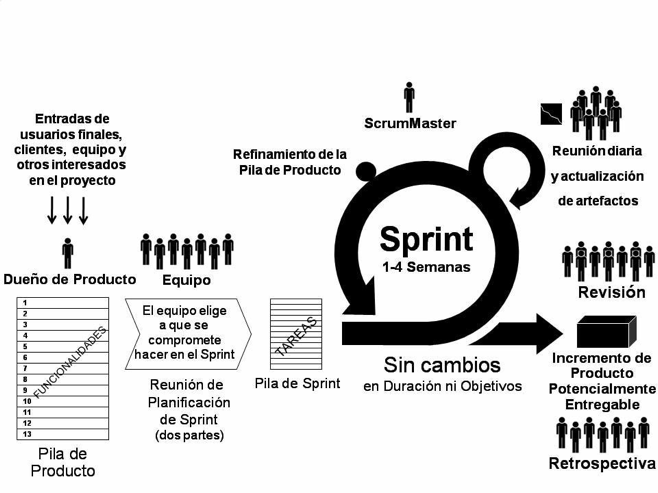
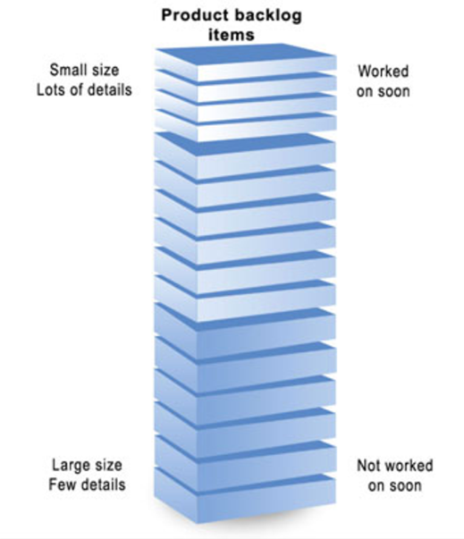

Desarrollo Ágil
El desarrollo ágil de software es una de las tendencias más de moda en el sector tecnológico pero, ¿Sabes en qué consiste realmente? ¿Cuáles son sus ventajas frente al modelo tradicional de cascada?
En los años 80 y 90, conforme la tecnología digital se convertía en el nuevo epicentro de la economía mundial, fue desarrollándose una metodología muy estructurada para el desarrollo de software, conocida popularmente como el modelo en cascada. Sin embargo, esta visión de gestionar proyectos (que consiste en cinco pasos: requisitos, diseño, implementación, verificación y mantenimiento) pronto chocó con el anhelo de muchos desarrolladores a la hora de trabajar de manera menos lenta y burocrática.
Ese fue el germen de lo que hoy se conoce como desarrollo ágil de software, una tendencia en alza en la que el desarrollo iterativo e incremental se impone a los trámites habituales en esta industria. O, dicho de otro modo, una metodología en la que el desarrollador va adaptando sus soluciones a unos requisitos también cambiantes a lo largo del tiempo.
Frente a los pasos del tradicional método en cascada, el desarrollo ágil de software se basa en seis pasos comunes dentro del ciclo de vida del software: planificación, análisis de requisitos, diseño, codificación, test y documentación. En cada interacción, el equipo de desarrollo no entrega todo el programa, sino que se van añadiendo pequeños elementos totalmente probados, sin errores, con el fin de que la solución final esté completamente operativa desde el minuto uno. En los métodos de desarrollo ágil de software, la comunicación entre todos los miembros del equipo es clave, ya que se busca eliminar las trabas habituales de reuniones, validaciones y revisiones formales por encuentros más informales y en fases tempranas e intermedias del proceso, no sólo en la última etapa del trabajo.
Para que una metodología de desarrollo de software se pueda considerar como ágil debe cumplir con cuatro valores fundamentales, recogidos en el Manifiesto Ágil:
•
Los individuos e interacciones, por encima de los procesos y las herramientas.
•
Software en funcionamiento, frente a la documentación exhaustiva.
•
La colaboración con el cliente sobre la negociación contractual.
•
Respuesta al cambio, mejor que el seguimiento de un plan.
En definitiva, se trata de eliminar todos los pasos o tareas innecesarias, además de impulsar una mayor eficiencia de todo el equipo involucrado en el desarrollo.
Ventajas del desarrollo ágil
A la hora de diseñar un software por el método clásico de cascada, lo normal es que se complete un proceso antes de arrancar con el siguiente; lo cual obliga a acelerar los trabajos (y reducir la calidad) a fin de cumplir con los plazos impuestos por los clientes. Sin embargo, al optar por una metodología ágil en la que se trabajan distintos elementos en paralelo, el equipo puede ir validando pequeñas partes del proyecto antes de realizar la entrega final perfecta.
Asimismo, al optar por este tipo de metodologías, se requiere personal multidisciplinar capaz de adaptarse a distintas circunstancias y necesidades en poco tiempo. Este factor, junto a la reducción de burocracia y la validación constante, permite afrontar mejor la sobrecarga de trabajo y facilitar la marcha del proyecto en su conjunto. Todo ello, a su vez, redunda en una notable reducción de costes.
Tipos de desarrollo ágil
Aunque la metodología ágil de desarrollo de software se entiende como una tendencia global en sí misma, su ejecución concreta se materializa en distintas vertientes o filosofías de trabajo (englobadas en la Agile Alliance, en muchos de los casos) que expresan métodos y herramientas concretas para gestionar de manera ágil los proyectos.
Entre estas metodologías ágiles destacan Scrum (creada en 1986, siendo una de las precursoras de este camino), eXtreme Programming (XP, creado en 1996 y que fomenta el trabajo en equipo y la comunicación entre los distintos miembros implicados en el desarrollo de software) o el Dynamic Systems Developement Method (DSDM, por sus siglas en inglés, que data de 1995).
Scrum
Metodología Scrum: ¿Qué es y cómo funciona?
A la hora de poner en marcha un proyecto, toda empresa debe asegurar que el equipo implicado conoce sus tareas y plazos de tiempo de entrega. Scrum es una metodología de trabajo que nos ayuda a conseguirlo y que, además, permite agilizar la entrega de valor al cliente en iteraciones cortas de tiempo.
Scrum es un proceso, marco de trabajo o framework, usado en equipos que trabajan en proyectos complejos; una metodología de trabajo ágil que tiene como finalidad la entrega de valor en períodos cortos de tiempo, basada tres pilares: la transparencia, inspección y adaptación.
¿En qué se basa?
Scrum se basa en aspectos como la flexibilidad en la adopción de cambios y nuevos requisitos durante un proyecto complejo, el factor humano, la colaboración e interacción con el cliente y el desarrollo iterativo como formas de asegurar buenos resultados.
Como hemos dicho anteriormente, se basa en 3 pilares:


El proceso, los eventos de Scrum

La gráfica describe los eventos de Scrum. El desarrollo iterativo se realiza en un Sprint, que contiene los siguientes eventos: Sprint planning, daily meeting, Sprint review y Sprint retrospective.
Sprint
El corazón de Scrum, es el contenedor de los demás eventos. Todo lo que ocurre en una iteración para entregar valor está dentro de un Sprint. La duración máxima es de 1 mes, el tiempo se determina en base al nivel de comunicación que el cliente quiere tener con nosotros. Sprints largos pueden hacer que perdamos feedback valioso del cliente, y poner en peligro nuestro proyecto.
Sprint planning
La primera reunión que se hace en el sprint, tiene una duración de 8 horas para Sprints de 1 mes. En esta reunión todo el equipo Scrum define qué tareas se van a abordar, y cuál será el objetivo del sprint.
El equipo se hace las siguientes preguntas:
•
¿Qué se va a hacer en el sprint? (Se eligen tareas del Product backlog).
•
¿Cómo lo vamos a hacer? (El equipo de desarrollo define las tareas necesarias para completar cada item elegido del Product Backlog).
La definición de qué se va a hacer hace que el equipo tenga un objetivo, y se encuentre comprometido con la entrega de valor que se hará al cliente en el Sprint. A esto se le llama Sprint Goal.
El resultado de esta reunión es el Sprint Goal y un Sprint Backlog (que revisaremos más adelante).
Daily meeting
Es una reunión diaria dentro del Sprint, que tiene como máximo 15 minutos de duración. En ella debe participar, si o si, el equipo de desarrollo, el Scrum Master y el Product Owner no tienen necesidad de estar.
En esta reunión diaria el equipo de desarrollo hace las siguientes 3 preguntas:
•
¿Qué hice ayer?
•
¿Qué voy a hacer hoy?
•
¿Tengo algún impedimento que necesito que me solucionen?
Esta reunión es la más oportuna para poder inspeccionar al equipo, y poder adaptarse en caso de que haya cambio de tareas dentro de un Sprint.
Sprint review
La review del valor que vamos a entregar al cliente se hace en esta reunión, al final de cada Sprint. Su duración es de 4 horas para Sprints de 1 mes, y es la única reunión de Scrum a la que puede asistir el cliente. En ella el Product Owner presenta lo desarrollado al cliente, y el equipo de desarrollo muestra su funcionamiento. El cliente valida los cambios realizados, y además nos brinda feedback sobre nuevas tareas que el Product Owner tendrá que agregar al Product backlog.
Sprint retrospective
La retrospectiva es el último evento de Scrum, tiene una duración de 3 horas para Sprints de 1 mes, y es la reunión del equipo en la que se hace una evaluación de cómo se ha implementado Scrum en el finalizado Sprint.
Es una gran oportunidad para el equipo Scrum de inspeccionarse a si mismo, proponiendo mejoras para el siguiente Sprint.
El resultado: una lista de mejoras que debe aplicar el siguiente día, ya que al finalizar la retrospectiva, inmediatamente comienza un nuevo Sprint, que incluye el Sprint Planning, Daily Meeting, Sprint review y la ya mencionada Sprint Retrospective.
Artefactos de Scrum
Los artefactos de Scrum están definidos para maximizar la transparencia dentro del equipo, es decir, que todos tengan una misma visión de lo que hay en el proyecto.
Los artefactos de Scrum son: Product backlog y Sprint backlog.
Product backlog
